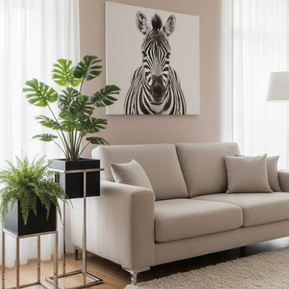
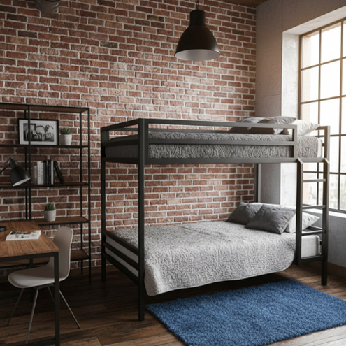

METAL & MADEIRA · MAIA
A forma nasce
do detalhe.
Serralharia decorativa e carpintaria. Metal, madeira e acabamentos para projetos à medida.
Estudo da abertura com imagem do site atual. O filme cinematográfico seria gravado com a equipa, numa fase posterior.
Art & Formas
Entre a ideia
e a peça, há ofício.
A Art & Formas combina serralharia e carpintaria na execução de mobiliário e estruturas para interiores. O metal e a madeira entram no mesmo projeto, com escolhas de forma, cor e acabamento.
Estruturas em metalMetal e madeiraAcabamentos
Possibilidades
Um ponto de partida
para cada ideia.
Escolha a área do seu projeto. Veja exemplos e descubra o que partilhar para iniciar a conversa.

Galeria
Veja mais de perto.
Uma seleção das imagens publicadas no website atual, organizada para explorar por área.
Explorar a galeriaA seleção preserva a origem das imagens. Não estabelece autoria individual, data ou características técnicas não confirmadas.